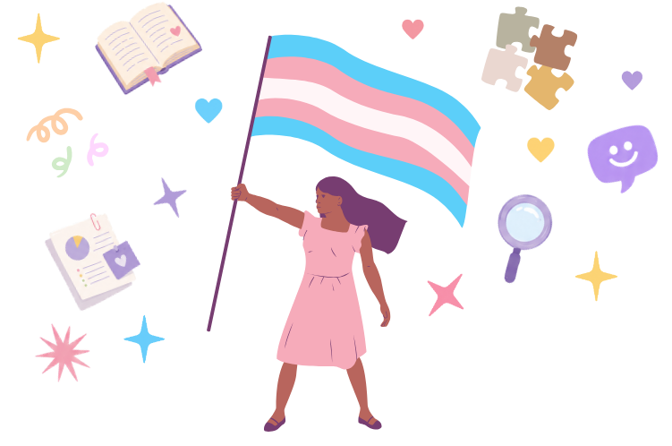

Elevate
Share and celebrate queer research.
A space to share ideas, highlight queer scholarship, and support projects that centre queer experiences across disciplines.

The Queer Research Hub is an emerging initiative at the University of Calgary that brings together 2SLGBTQIA+ students, staff, faculty, and allies interested in research, collaboration, and community.
The hub centres queer experiences across disciplines, while creating space to share ideas, highlight queer scholarship, foster collaboration, and build visibility for queer research.
Some button here idk yetShare and celebrate queer research.
Build relationships with scholars across disciplines and lived experience.
Break out of silos to build transdiscplinary networks.
Researcher's names
Super cool description of someone's super cool research project :3
Find out more about the cool project hereResearcher's names
Super cool description of someone's super cool research project :3
Find out more about the cool project hereResearcher's names
Super cool description of someone's super cool research project :3
Find out more about the cool project hereJoin talks, workshops, social gatherings, and events for queer research.
Co-founder · Faculty
Co-founder · Faculty
Co-founder · Faculty
Co-founder · Graduate Student
Co-founder · Graduate Student
TODO
Create a solo Queerposium page, where we can include pictures from the event
Think about where I can put real pictures on THIS page
Put more queer elements (flags, etc)
Join the mailing list for events, opportunities, research calls, and opportunites for collaboration.